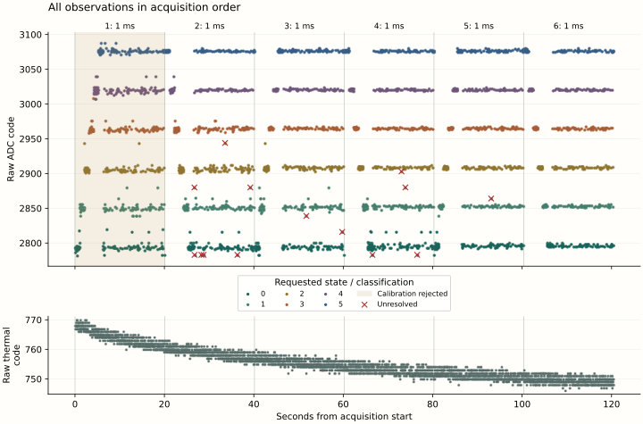
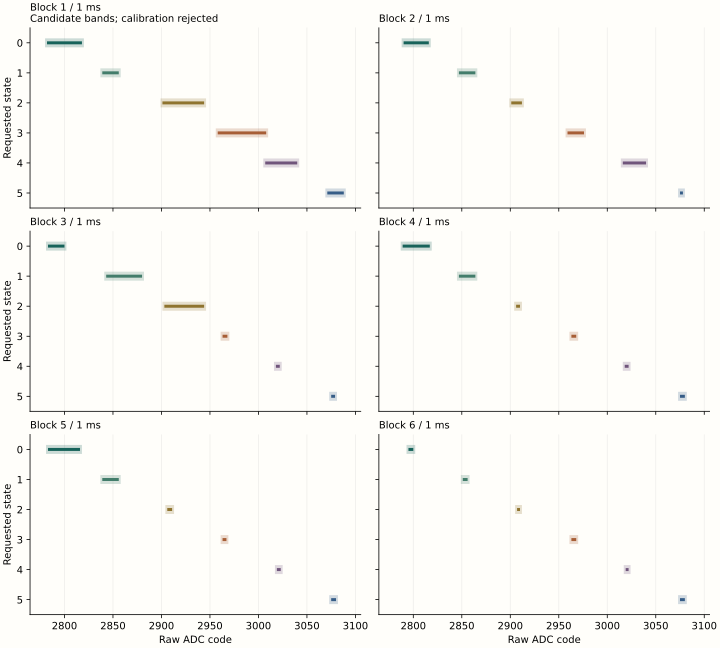
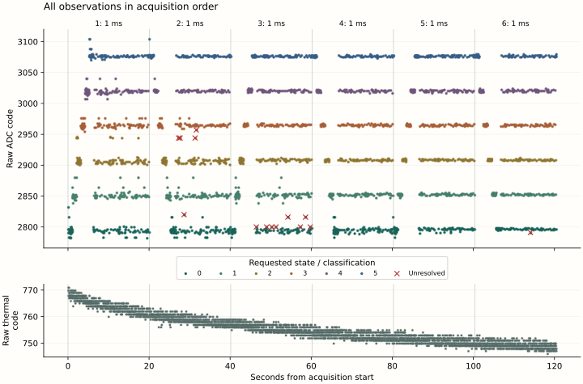
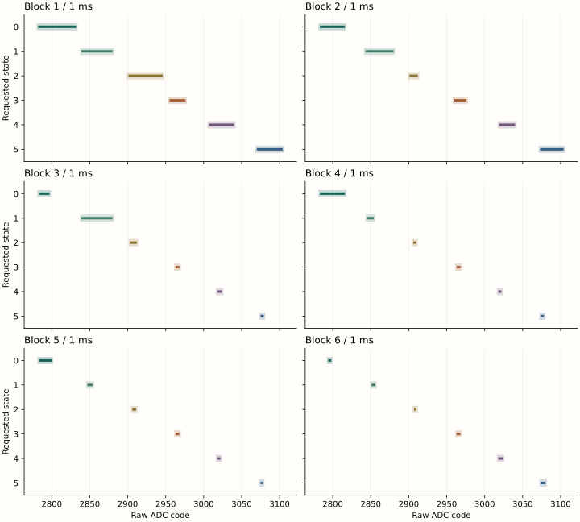
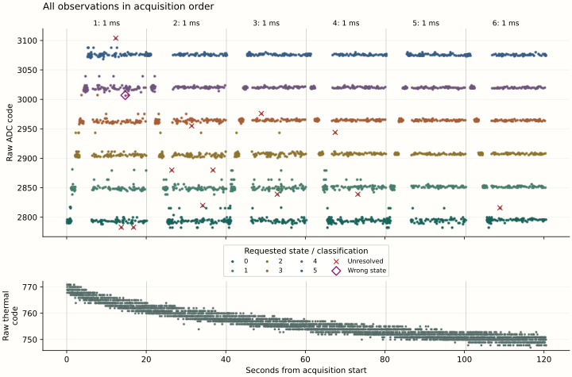
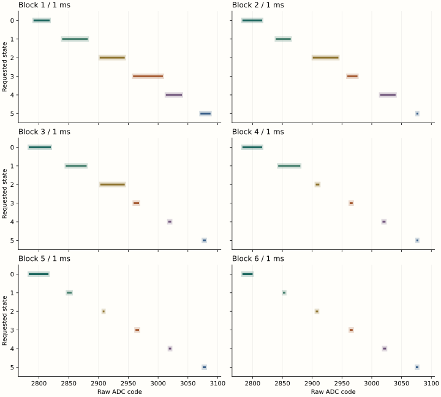

Physical results across three boots
All three boots recovered all 3,888 scheduled observations. Run 3 recorded 2,146 correct, 0 wrong, 14 unresolved and 432 unavailable held-out readings. Its first block rejected calibration because the training ranges for states 3 and 4 overlapped. Raw acquisition continued as specified; no recognition was assigned for that block. Only block 6 met its complete recognition criterion.
Of 2,592 held-out readings in run 1, 2,579 were correct, 1 was wrong and 12 were unresolved. In run 2, 2,578 were correct, none was assigned the wrong state and 14 were unresolved. Neither run had unavailable recognition. No boot met the full recognition criterion.
| Run | Block | Training order | Correct | Wrong | Unresolved | Unavailable | Block criterion |
|---|---|---|---|---|---|---|---|
| 1 | 1 | Ascending | 428 | 1 | 3 | 0 | Not met |
| 1 | 2 | Descending | 428 | 0 | 4 | 0 | Not met |
| 1 | 3 | Ascending | 430 | 0 | 2 | 0 | Not met |
| 1 | 4 | Descending | 430 | 0 | 2 | 0 | Not met |
| 1 | 5 | Ascending | 432 | 0 | 0 | 0 | Met |
| 1 | 6 | Descending | 431 | 0 | 1 | 0 | Not met |
| 2 | 1 | Ascending | 432 | 0 | 0 | 0 | Met |
| 2 | 2 | Descending | 427 | 0 | 5 | 0 | Not met |
| 2 | 3 | Ascending | 424 | 0 | 8 | 0 | Not met |
| 2 | 4 | Descending | 432 | 0 | 0 | 0 | Met |
| 2 | 5 | Ascending | 432 | 0 | 0 | 0 | Met |
| 2 | 6 | Descending | 431 | 0 | 1 | 0 | Not met |
| 3 | 1 | Ascending | 0 | 0 | 0 | 432 | Not met |
| 3 | 2 | Descending | 425 | 0 | 7 | 0 | Not met |
| 3 | 3 | Ascending | 430 | 0 | 2 | 0 | Not met |
| 3 | 4 | Descending | 428 | 0 | 4 | 0 | Not met |
| 3 | 5 | Ascending | 431 | 0 | 1 | 0 | Not met |
| 3 | 6 | Descending | 432 | 0 | 0 | 0 | Met |
In all three runs, all sample and operating checks reported success, all 3,888 ADC result pairs agreed, and no pair diagnostics were missing. Both control readbacks matched every requested setting. All six block restorations and final pin release reported success. These checks do not qualify a rejected calibration.
Predefined early-to-late comparison
| Run | Group | Correct | Wrong | Unresolved | Unavailable |
|---|---|---|---|---|---|
| 1 | Early | 856 | 1 | 7 | 0 |
| 1 | Middle | 860 | 0 | 4 | 0 |
| 1 | Late | 863 | 0 | 1 | 0 |
| 2 | Early | 859 | 0 | 5 | 0 |
| 2 | Middle | 856 | 0 | 8 | 0 |
| 2 | Late | 863 | 0 | 1 | 0 |
| 3 | Early | 425 | 0 | 7 | 432 |
| 3 | Middle | 858 | 0 | 6 | 0 |
| 3 | Late | 863 | 0 | 1 | 0 |
Run 1 changed from 8/864 early to 1/864 late wrong-plus-unresolved readings. Run 2 changed from 5/864 early to 1/864 late, while its middle group contained 8/864. Run 3's early group contains 432 unavailable classifications; its seven unresolved readings and one late unresolved reading cannot establish an eligible early-to-late improvement.
| Run | Comparison | Early count | Late count | Early unavailable | Assessment |
|---|---|---|---|---|---|
| 1 | Pooled | 8 | 1 | 0 | Lower |
| 1 | Ascending | 4 | 0 | 0 | Lower |
| 1 | Descending | 4 | 1 | 0 | Lower |
| 2 | Pooled | 5 | 1 | 0 | Lower |
| 2 | Ascending | 0 | 0 | 0 | Tied |
| 2 | Descending | 5 | 1 | 0 | Lower |
| 3 | Pooled | 7 | 1 | 432 | Ineligible: calibration rejected |
| 3 | Ascending | 0 | 1 | 432 | Ineligible: calibration rejected |
| 3 | Descending | 7 | 0 | 0 | Lower |
The three-boot series is complete. The primary recurrence criterion is not established. Run 3 makes the pooled and ascending comparisons ineligible under the declared criteria. The descending comparison is eligible and has a smaller late count in all three boots; this direction-specific result does not replace the primary comparison. Run 2's ascending comparison remains a tie. No unavailable reading is counted as correct or as an error-free observation.
Acquisition diagnostics
Run 3: overlapping training ranges
In block 1, state 3's raw training extrema were 2958–3008 and state 4's were 3007–3040. Their candidate bands, after the fixed two-count guard, were 2956–3010 and 3005–3042. The raw ranges already overlap; changing the guard alone cannot separate them. Calibration returned status 3 and all 432 held-out readings retained recognition as unavailable. These candidate bands were not accepted as a recognition map.
Blocks 2–6 calibrated. Their unresolved counts were seven, two, four, one and zero. Adjacent guarded-edge differences in those accepted blocks spanned 15–49 raw counts. All observations remain in the record.
Acquisition began 1.024647 s after trial entry and lasted 120.427520 s. The final trial section began 1,102.047348 s after entry, approximately 18 minutes 22 seconds. ADC calls lasted 22.139–22.354 ms; repeated high-byte reads were separated by 4.439–4.594 ms. Observed CPU frequency spanned 1,499,970,668–1,500,028,995 Hz; raw ten-bit thermal codes spanned 746–770, without a calibrated temperature conversion.
Every conversion-control poll returned zero on its first read, with conversion-status value one. No busy-to-ready transition was observed. Agreement between repeated result reads therefore still does not establish conversion freshness.


Exploratory counts: six of fourteen unresolved codes were divisible by sixteen; four followed an unchanged requested control. These features do not identify the cause. No observation was discarded or used to widen a band.
Run 2 diagnostic context and figures
The fourteen unresolved readings occurred in blocks 2, 3 and 6: five, eight and one respectively. All eight in block 3 requested state zero. Six returned raw code 2800, one count above that block's upper band edge of 2799; two returned 2816, seventeen counts above it. Three block-2 readings requested state 2 and returned 2944, thirty counts above its upper edge. No reading was assigned to a wrong state.
Acquisition began 1.014324 s after trial entry and lasted 120.432215 s. The final trial section began 1,102.019936 s after entry, approximately 18 minutes 22 seconds. Recorded pre-ADC delays spanned 1.000019–1.000463 ms. ADC calls lasted 22.142–22.357 ms; repeated high-byte reads were separated by 4.440–4.611 ms.
Every conversion-control poll returned zero on its first read, with conversion-status value one. Runs 1 and 2 therefore retain the same unresolved conversion-freshness question: agreement between repeated result reads does not establish a newly completed conversion. Run 2's observed CPU frequency spanned 1,499,969,668–1,500,028,773 Hz; raw ten-bit thermal codes spanned 746–771.


Exploratory counts: eleven of fourteen unresolved codes were divisible by sixteen; four followed an unchanged requested control. These features do not identify the cause. No observation was discarded or used to widen a band.
Run 1 diagnostic context and figures
The single wrong-state classification occurred at zero-based observation 480, in block 1, 14.714516 s after acquisition began. Requested state 4 produced raw code 3007 and was recognized as state 3. State 3's frozen band was [2956, 3010]; state 4's was [3011, 3042]. The preceding requested state was 3. Both control readbacks were 102, matching the requested state-4 setting, and both ADC result pairs returned 3007.
The nearest adjacent guarded edges in block 1 differed by one raw count. The bands were disjoint, but no unused integer code separated those two edges. This observation and the preceding state identify the recorded context of the error; they do not establish its cause.
Acquisition began 1.014225 s after trial entry and lasted 120.433026 s. The final trial section began 1,101.945057 s after entry, approximately 18 minutes 22 seconds. The recorded pre-ADC delay spanned 1.000019–1.000481 ms. ADC calls lasted 22.145–22.353 ms; the second result high-byte read followed the first by 4.439–4.596 ms.
Every conversion-control poll returned zero on its first read; conversion-status values were one throughout. These records contain no observed busy-to-ready transition. Agreement between repeated result reads does not establish conversion freshness. Observed CPU frequency spanned 1,499,971,227–1,500,030,443 Hz; ten-bit thermal codes spanned 747–771, without a calibrated temperature conversion.


Exploratory counts: six of twelve unresolved codes were divisible by sixteen; three followed the same requested control as the preceding observation. No observation was discarded or used to retune a band.
Interpretation
The fixed-delay series is complete, with one failed calibration and residual recognition failures in every boot. Run 3's pooled comparison is ineligible, so the primary early-to-late recurrence is not established. The eligible descending comparisons all have fewer late failures; their training direction and block positions remain coupled.
The native instruction regions and operating configuration were unchanged between preparations; only the payload header carried a fresh run identity. Each block still fitted its own bands. Elapsed operation, workload history, thermal effects, training variation and acquisition behavior remain associated. The observations do not establish thermal causation, a warm-up requirement, absolute ADC accuracy or a universal stabilization interval.
The next experimental question is whether the acquisition path reliably distinguishes a newly completed ADC conversion, and how the overlapping training values arise. Repeating the unchanged series, widening bands or discarding startup observations would not resolve that question. The present evidence supports continued six-state investigation but does not yet qualify reliable six-state recognition.
Returned evidence and run conditions
Each read-only acquisition produced two matching 67,108,864-byte reads. In each run, all 24,932 occupied SGDATA01 sectors passed identity, sequence, padding and checksum checks; the remaining 7,772 reservations matched their initial empty bytes. Each boot payload and configuration match its own preparation.
Run 3 / 98D4CF2F06CF
Reported conditions: the Pi was powered off for more than ten minutes, ran once for thirty uninterrupted minutes, and was powered off before SD removal. A Windows format warning was reported after return. Power intervals are operator-reported, not independently measured.
Raw capture SHA-256: 75b077b023105c71c225ae1e251dc89607bcd40a1dd5b379749591cac80b4d96
Run 2 / 5443993FF4C8
Reported conditions: the Pi was powered off for at least five minutes, ran once for thirty uninterrupted minutes, and was powered off before SD removal. No procedure deviations were reported. These are operator-reported intervals, not independently measured power timestamps.
Raw capture SHA-256: ea0f77afa3440ece666819791c3f40dd0e31c787b45a7bc2ca951135072fcd61
Run 1 / C7DDDF49C134
Reported conditions: the Pi was powered off for more than ten minutes, ran once for thirty uninterrupted minutes, and was powered off before SD removal. The original acquisition and analysis remain unchanged.
Raw capture SHA-256: 8b2fad46975939b08693c0e0b94bd90170dd00117a96f1452b9b27133bb375f0
The run-1 and run-2 images have changes at the same seven sectors outside the journal, within the boot FAT volume: LBAs 32769, 32873, 33641, 34336 and 43682–43684. Run 3 has three additional changed sectors, assessed below. Their presence does not identify the writer. Recovery of a final record does not prove completion of its subsequent target readback.
Returned boot volume
After run 3, Windows recognized the boot partition as FAT32 but reported Warning / Full Repair Needed. A read-only fsutil dirty query confirmed that the volume was marked dirty. Both raw acquisition reads matched; all native journal checks passed, and config.txt and seigr.bin exactly matched the prepared bytes. No formatting or repair was performed during acquisition.
The saved image differs from its preparation at ten sectors outside the journal. In addition to the seven locations observed in earlier returns, LBA 32768 has boot-sector offset 65 changed from 0 to 1; LBAs 32800 and 33568 have the reserved FAT entry at index 1 changed from 0xffffffff to 0x7fffffff. Both FAT copies agree. These values match the dirty-marker definitions in Microsoft's FAT driver sample.
The markers are consistent with Windows reporting a dirty volume. They do not establish when, why or by which writer the changes occurred, nor whether the reported format prompt had the same cause. The preserved native journal lies before the FAT partition. Its successful recovery is not a complete filesystem or SD-medium health assessment.
Question and prior evidence
Does the early-to-late change in six-state recognition recur when the pre-ADC delay remains at 1 ms? In the preceding sequence, the first three blocks contained 28 unresolved classifications and the last three contained none, including the final 1 ms block. All result pairs agreed. Delay and acquisition order changed together, so that result does not establish the cause of the improvement.
This experiment holds the programmed delay constant, preserves every early observation and repeats the sequence across three separately recorded boots. It tests repeatability of the observed behavior; it does not impose a warm-up rule on Hyphos.
Declared method
Use the same Pi, supply, cooling arrangement, control codes 90, 93, 96, 99, 102 and 105, two-count guard, ADC diagnostics, operating checks and restoration path. All six blocks use a 1,000 microsecond pre-ADC delay. Each block retains 216 training conversions and 432 held-out observations, for 3,888 observations per boot.
- Hold each of the six controls for 36 consecutive training conversions. Alternate ascending and descending training direction by block, as in the preceding candidate.
- Freeze each block's training bands before its held-out observations. Exercise all 36 ordered transitions, including self-transitions, six times, recording predecessor and destination separately.
- Retain both ADC result-pair reads, their availability and status, timing, control readbacks, CPU-frequency observations and raw thermal status. No values are removed or substituted.
- Restore the original control after every block. A calibration rejection retains raw acquisition with recognition unavailable; hardware, operating-condition, transport or restoration failures retain the attempted prefix and stop acquisition.
- Repeat the same sequence on three separate boots. Preserve the SD return before preparing a fresh run identity and empty journal for the next boot.
The scheduled observation count is fixed. Actual acquisition duration follows the recorded counters; removing the longer delays is expected to shorten it relative to the preceding 150-second acquisition. No observations are deliberately discarded as warm-up. Journal writing follows acquisition and remains inside the 30-minute prescribed power window.
Predefined comparisons
| Group | Blocks | Training direction | Held-out observations |
|---|---|---|---|
| Early | 1 and 2 | Ascending and descending | 864 |
| Middle | 3 and 4 | Ascending and descending | 864 |
| Late | 5 and 6 | Ascending and descending | 864 |
The primary descriptive comparison is early versus late within each boot. Report correct, wrong, unresolved and unavailable recognition separately; then report the same comparison within each training direction (1 versus 5, and 2 versus 6). Middle blocks remain visible and do not determine the analysis window.
Report training distributions, frozen band widths, raw ADC variation, ADC diagnostics, elapsed time and raw thermal codes alongside recognition. Different blocks still train their own bands. Training variation, workload history and elapsed operation remain possible explanations; a change in classification counts alone cannot establish thermal causation or a universal stabilization time.
Assessment criteria
A boot meets the full recognition criterion only if all 3,888 observations are recovered, all six blocks calibrate, all 2,592 held-out observations are correctly recognized, all required sample and operating checks succeed, the ADC result pairs agree, and all restoration checks succeed. Report each failed condition explicitly.
Assess an early-to-late improvement only for complete groups with valid acquisition and calibration. A recurrence is recorded only if the late wrong-plus-unresolved count is smaller than the early count in each of the three completed boots. Report ties, reversals and direction-specific results; three successful boots with zero early failures demonstrate successful observations but do not demonstrate an improvement from startup. Incomplete or unavailable observations cannot count as improvement.
The three boots are repeated trials on one apparatus. Individual readings are not assumed statistically independent. Retain all outcomes and do not widen guards, choose a delay, redefine early/late windows or stop the planned sequence because an intermediate result is favorable. A hardware failure ends the affected run and is reviewed before further exposure.
Execution and evidence
The existing SEIGRASM instruction bytes implement the complete acquisition. The new image changes the delay data and configuration schema to identify the fixed-delay profile. Delay selection already accepts the six stored intervals; scheduling, ADC access, supervision, calibration and restoration remain the same operations. The existing ROM/EEPROM loader still supplies entry.
Configuration schema 3 records six 1,000 microsecond delays. SGDATA01 retains the same 64-word observations, six band/status areas and maximum 24,932 sectors. The independent reader validates the profile and reports the predefined early, middle and late groups. PC packaging copies literal opcodes and data; it implements no target acquisition.
Each preparation retains its image identity, source snapshots, software checks and SD readback. Each returned run retains two matching raw reads, decoded observations and independent assessment. The preceding returned evidence and its frozen preparation remain unchanged. Results from all three boots and the combined assessment are available. The reader recomputes eligibility from each preserved return.
SD preparation and physical procedure
All three planned boots have returned. Candidate C7DDDF49C134 was written to the verified project SD on 24 September 2026. A reopened-device readback of all 67,108,864 bytes matched the prepared image. All 193 software checks passed against unchanged sources, including complete fixed-delay acquisition and code-region equality with the preceding candidate.
Image SHA-256: 5725597836a55837230f0c9e8c6570579ae21a297dafb562b10fc5ef31a28145
Run 2 preparation
Candidate 5443993FF4C8 retained all native instruction regions and operating configuration from run 1. Its payload changed only the run-identity header. All 193 software checks passed, and the complete SD readback matched image SHA-256 a9e59ed027201c1e0e1b3c90a979c13b502994c334409703f67b93f7c03a1579.
The installation backup matched the preserved preceding return exactly. No earlier candidate or returned evidence was replaced. Each preparation retained a fresh identity and empty journal.
Run 3 preparation
Candidate 98D4CF2F06CF retained all instruction regions and operating configuration from run 2; only the identity header changed. The prior 193-test validation was reused after exact matching of all 66 validation-source hashes. The full SD readback matched image SHA-256 57317e1bacd92e50bf37af01f10b384ca1fde759fb811037611493ad73f5342f. The pre-installation backup matched the preserved run-2 return.
Prescribed procedure
- Keep the testing Pi powered off for at least five minutes before each run. This standardizes a minimum interval; it does not establish equal starting temperature. Starting conditions are retained in the native record.
- Safely eject the prepared SD from the PC and insert it into the powered-off Pi.
- Power the Pi once and leave it uninterrupted for 30 minutes. The candidate acquires once, attempts restoration, writes the journal and parks.
- Power off before removing the SD and return it to the PC. Preserve that return before preparing run 2 or run 3. Additional boots on the same occupied journal are not part of the procedure.
The 30-minute power window allows for acquisition and storage; returned counters and records establish the recovered execution boundary. The preceding final trial section began about 18 minutes 52 seconds after entry. Actual power duration and deviations must be distinguished from the prescribed procedure.